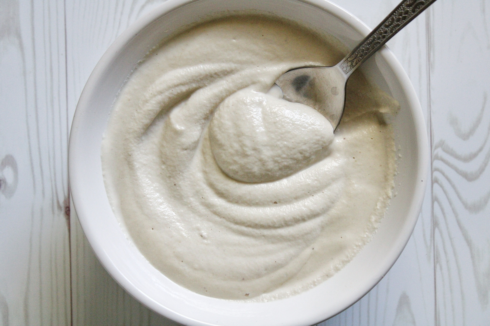

Cashew Cream
Home

Description
This cashew cream is a perfect base cream to add to nachos, tacos or anyplace you might use sour cream. It can also be adapted into a vegan queso by adding chili pepper paste.
Ingredients
1 cup raw cashews*
2 tbsp extra-virgin olive oil (or any neutral oil)
2 tbsp fresh lemon juice
1 garlic clove
1/2 tsp salt
2 tbsp nutritional yeast
Steps
- Boil water and combine it with cashews in a blender.
- Let soak for 2 minutes.
- Add all other ingredients and blend on high speed for 1 minute.
- Allow to cool completely and refridgerate overnight.